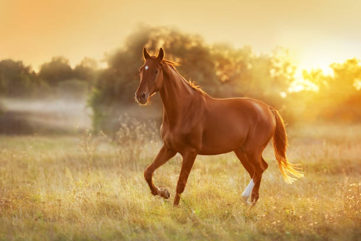
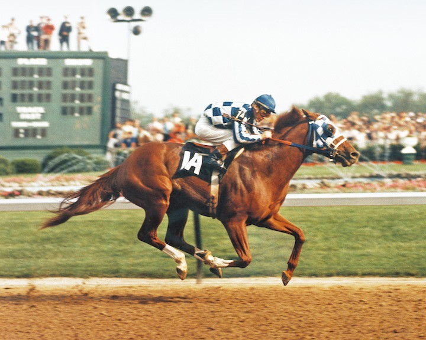
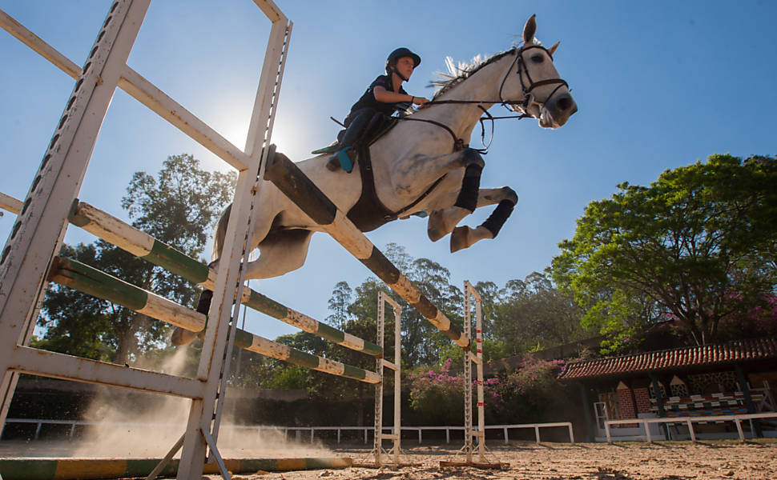
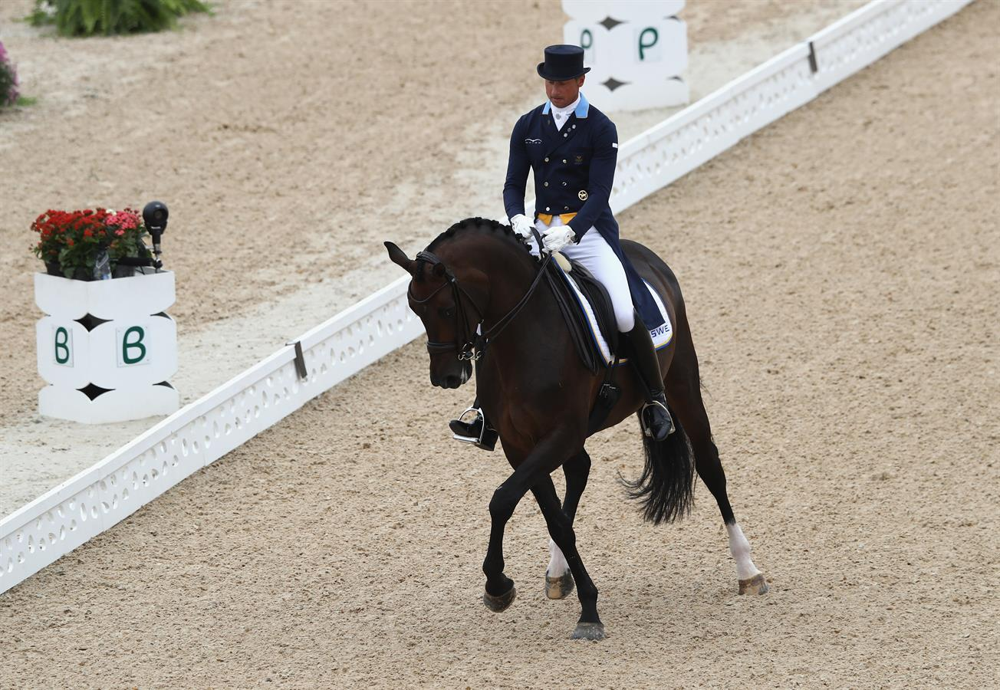
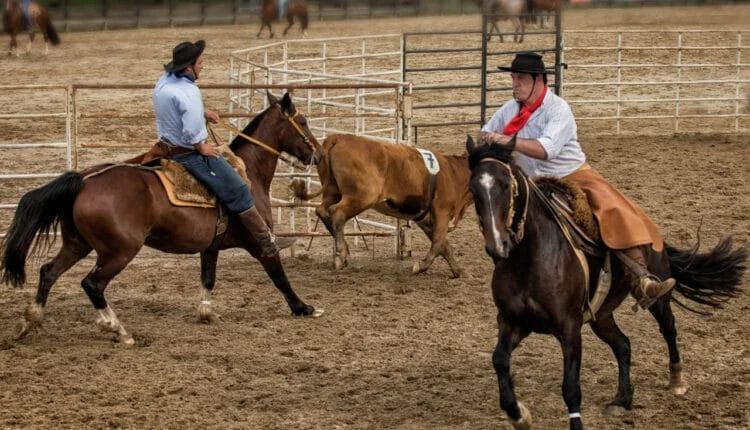
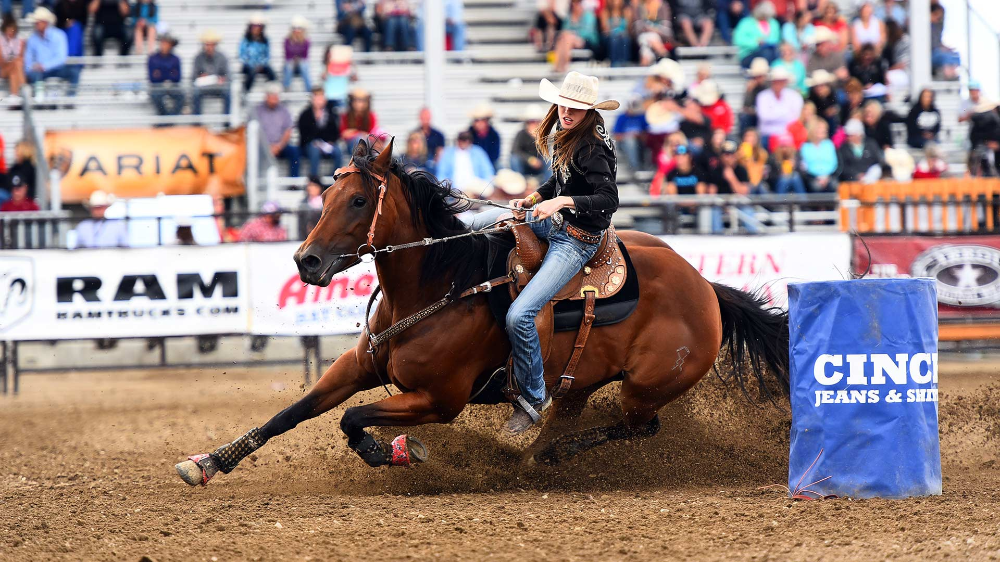
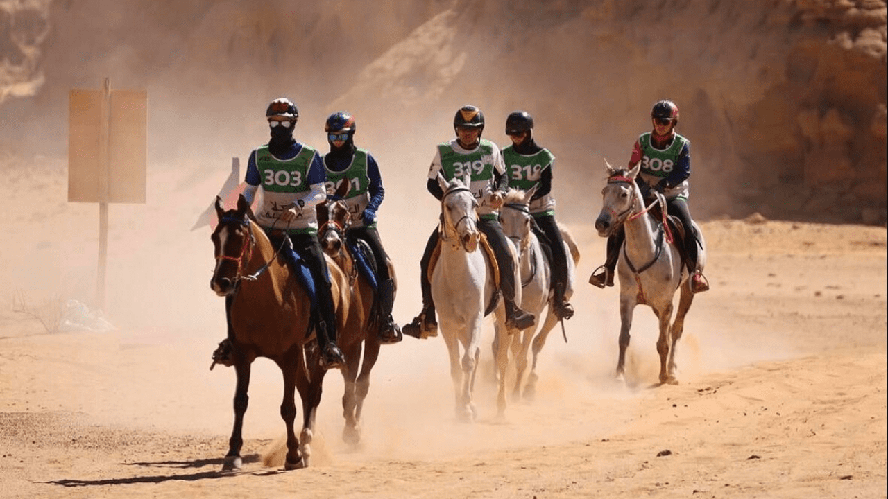
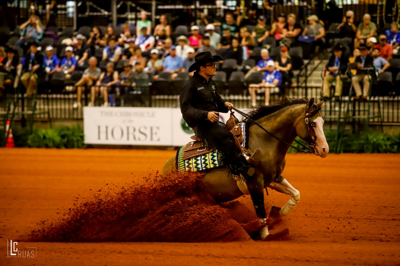
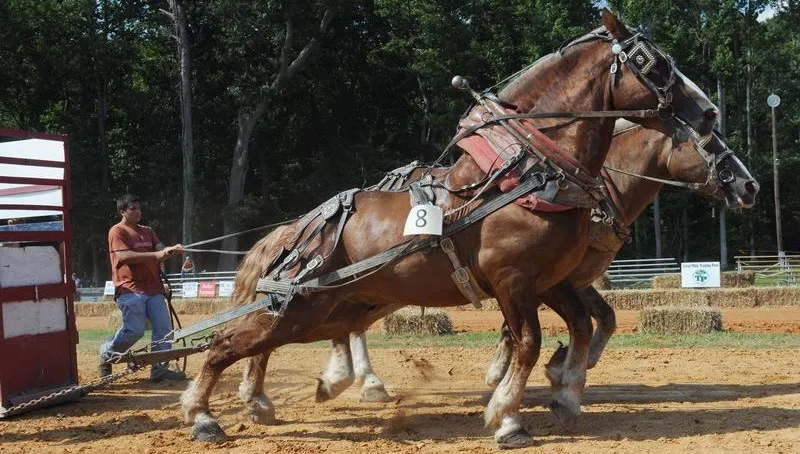

Curiosidades:
Fatos Surpreendentes e Anatomia
-
Visão panorâmica: Seus olhos são os maiores entre os mamíferos terrestres e ficam nas laterais da cabeça, proporcionando um campo de visão de QUASE 360 graus.
Dentes não param de crescer: Os dentes dos cavalos crescem continuamente ao longo da vida, necessitando de degaste natural ou limado regular (chamado de floating)
- Sistema digestivo diferente: Os cavalos não conseguem vomitar nem respirar pela boca, o que torna a alimentação e o manejo de gases extremamente importantes para evitar problemas estomacais, como a cólica equina.
Comunicação e audição:Eles possuem 16 músculos em cada orelha, permitindo que girem em 180 graus para indentificar sons.
Comportamento:

Dormem de pé e deitados: Embora possuam um mecanismo nas pernas que lhes permite descansar em pé, eles precisam deitar para atingir o sono profundo, não o atingindo na maioria das vezes por questões de se sentirem inegurus com o local.
Ótima memória: Vários grupos de pesquisa pelo mundo estudaram a memória dos cavalos. O pesquisador Paolo Baragli, da Universidade de Pisa, na Itália, mostrou que eles lembram de tarefas antigas e entendem gestos humanos também apontam que os equinos possuem uma memória excelente, sendo capazes de reconhecer pessoas e se lembrar de lugares após muito tempo.
Superatletas: Um cavalo pode beber cerca de 50 litros de água por dia e algumas raças, como o Puro Sangue Inglês, podem atingir velocidades de até 70km/h.
Tempo de vida: A expectativa média de vida é entre 25 e 30 anos, embora alguns exemplares possam ultrapassar os 40 anos de idade.
Figuras famosas:
Rodrigo Pessoa e Baloubet du Rouet:Um dos maiores nomes do hipismo mundial, o brasileiro Rodrigo Pessoa fez história com o garanhão Baloubet du Rouet. Juntos, conquistaram o tricampeonato consecutivo da Copa do Mundo de Salto (1998, 1999 e 2000) e a medalha de ouro nas Olimpíadas de Atenas em 2004. O cavalo é considerado um dos maiores campeões de todos os tempos.
Isabell Werth:A alemã é a maior medalhista olímpica da história do adestramento ou dressage, com 12 medalhas conquistadas entre 1996 e 2020, sendo 7 de ouro ela começou aos 17 anos com a ajuda de um treinador vizinho e construiu uma dinastia no esporte.
Secretariat: Foi um lendário cavalo puro-sangue de corrida norte-americano. Em 1973, ele quebrou um jejum de 25 anos e venceu a Tríplice Coroa. Ele quebrou recordes de tempo nas três corridas e considerado um dos maiores atletas da história.
Sefton:Era um cavalo de cavalaria que sobreviveu a um ataque a bomba do IRA, em Hyde Park, Londres, em 1982. A bomba matou quatro soldados e sete cavalos. Sefton, que tinha 19 anos, sofreu uma lesão na jugular e 34 feridas, incluindo uma grave lesão ocular. Ele passou por uma cirurgia de oito horas e se recuperou o suficiente para voltar ao serviço.

Esportes:
Salto:Prova clássica onde cavaleiro e cavalo devem transpor uma série de obstáculos em um percurso demarcado dentro de um tempo estipulado.

Adestramento (Dressage):Consiste na execução de uma série de movimentos precisos e obrigatórios numa pista delimitada, avaliando a harmonia, flexibilidade e obediência do cavalo.

Ranch Sorting:Esporte em rápido crescimento no país. Duplas trabalham contra o tempo para separar e conduzir novilhos numerados de um curral para outro, em uma área delimitada.

Tambor e Baliza:Provas de velocidade onde o cavaleiro contorna tambores ou balizas dispostas em triângulo na menor fração de tempo possível.

Enduro: Provas de longa distância em terrenos variados, exigindo grande preparo físico e rigoroso acompanhamento de saúde e veterinária para o cavalo.

Rédeas:Competição que avalia a habilidade atlética do cavalo de Doma Clássica ou de trabalho, executando círculos, esbarros e giros a partir de comandos precisos.

Tração:São cavalos que pesam entre 700 kg e 1.000 kg. Eles têm pernas grossas e músculos grandes. Por causa disso, eles conseguem puxar cargas muito pesadas.
